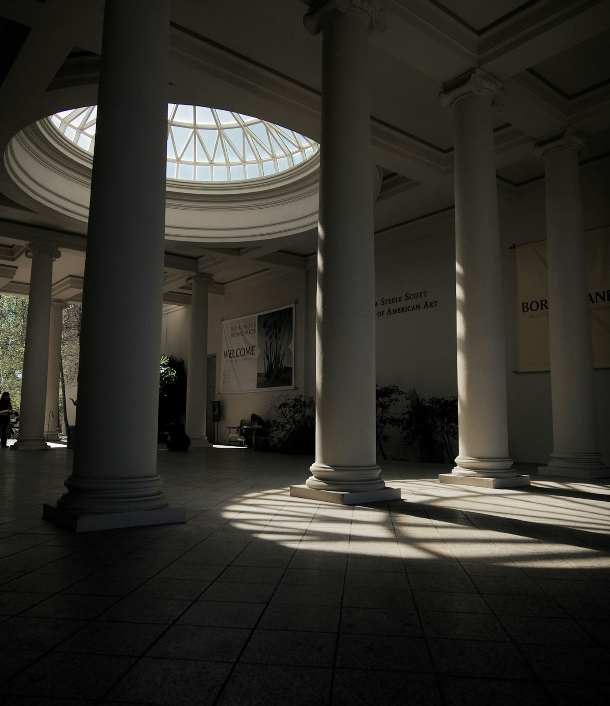
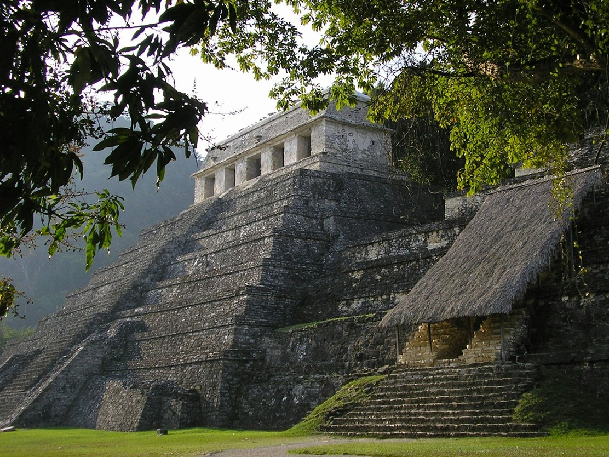

精選展覽

現正展出
虛擬體驗 · 拖曳瀏覽
探索
查看全部 →
探索
虛擬導覽
學術活動
近期演講
近期演講
與座談
| 日期 | 活動名稱 | 講者 | 狀態 |
|---|---|---|---|
| 2026.07.19 | 卡巴拉與靈魂的建築學 | Dr. Sarah Goldstein | 已額滿 |
| 2026.08.02 | 神道教儀式與神聖的生態學 | Dr. Meera Kapoor | 報名中 |
| 2026.08.23 | 印度教與宇宙時間：創世的循環 | Rev. Thomas Kuang | 報名中 |
| 2026.09.13 | 大地的福音：原住民靈性生態學 | 陳欣怡 博士 | 報名中 |